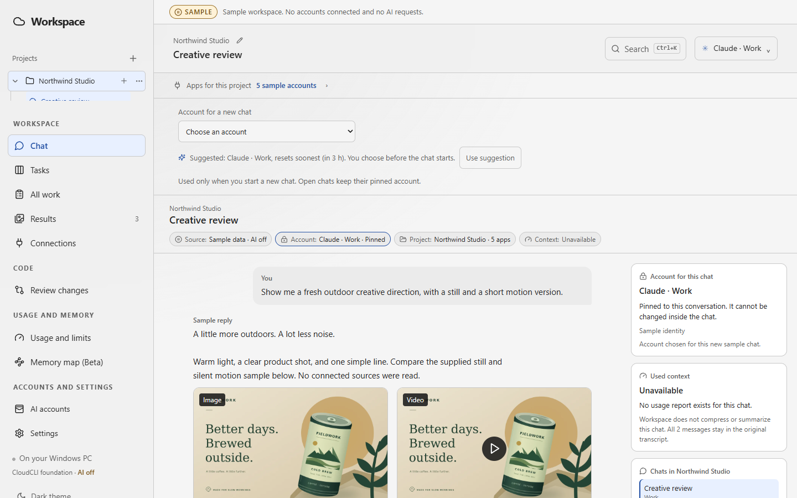
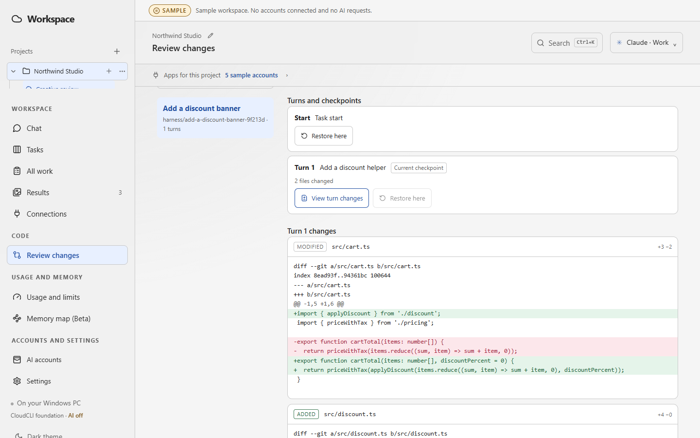

Summoner: one desk for several AI agents
Summoner is a desktop AI harness I am building for directing several AI coding agents on one project. I choose which AI does each job, it starts with the context it needs, and nothing it produces is final until I approve it. It is an early prototype that runs on sample data.

Why I am building it
I build AdNexus and my side projects with several AI agents at once: Claude for one task, Codex for another, a second model to check the first. Keeping track of who changed what, which chat holds which decision, and where a project stopped gets messy fast. Summoner keeps the project, not the chat, as the thing that persists.
What it does
- I choose the AI. I pick the agent and account for each job. Summoner can suggest one, and I confirm.
- It arrives ready. An agent starts inside the project with its tools, the project context and its memory, so I do not explain the work again.
- Several at once. More than one agent can work in parallel, each on its own Git branch, side by side.
- Second opinions. A different model reviews another agent's work before I accept it.
- Nothing final without approval. Merges, account changes and other consequential actions wait for me.

Every agent turn is a checkpoint with its own set of changes, which I can inspect or roll back. That is the same rule as AdNexus: preview the change, approve it, and keep a way back.
Where it stands
The screens, the review flow and the account choices work on a built-in sample workspace. Live model connections are the next step, and there are no releases yet. I set the product direction and build it with AI assistance on an open-source foundation, keeping its license.